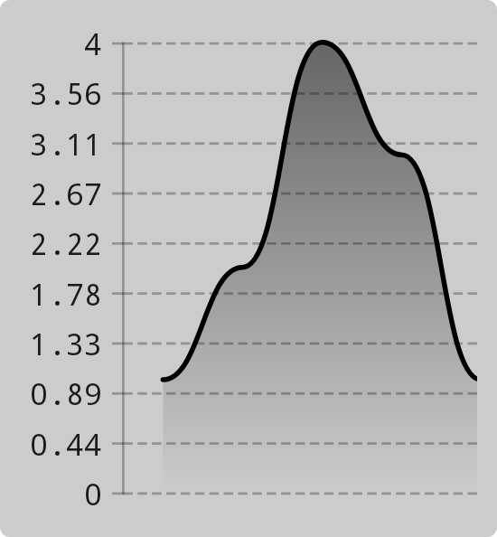
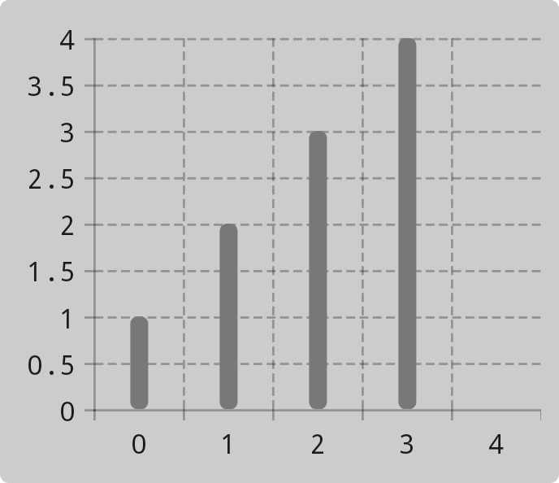
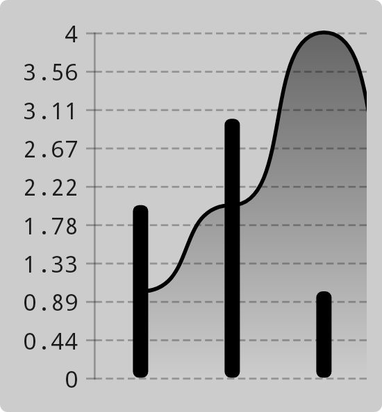

Chart types
Chart types define how data is presented on a chart.
Overview
Vico offers three chart types:
-
Line charts display data as a continuous line (or multiple lines).

-
Column charts display data in the form of columns. It is possible to display multiple columns per chart segment, in which case they can be grouped (displayed next to each other) or stacked (placed on top of one another).

-
Composed charts comprise two or more charts. The charts can be of the same type or of different types. The charts in a composed chart can be independently scaled, which can be configured via the
targetVerticalAxisPositionparameter ofLineChartandColumnChart.
All chart types offer customization options, which are described later on in this wiki. You can create your own chart types by extending BaseChart or Chart.
Setting the type of a chart
You can set the type of a chart as follows:
-
In the view system, use the
chartattribute ofChartView(possible values:line,column, andstackedColumn). To create a composed chart, useComposedChartViewand itschartsattribute (example:line|column). To provide a customChartimplementation, use thechartfield ofBaseChartView(which is extended byChartViewandComposedChartView). -
In Jetpack Compose, use the
chartparameter of theChartcomposable. You can use thelineChartorcolumnChartfunction, or provide a customChartimplementation. To create a composed chart, use the+operator:
Examples
See the sample app for multiple examples in both Jetpack Compose and the view system.